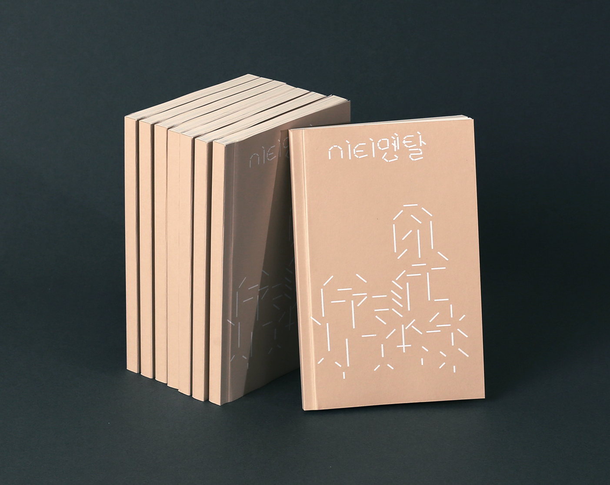
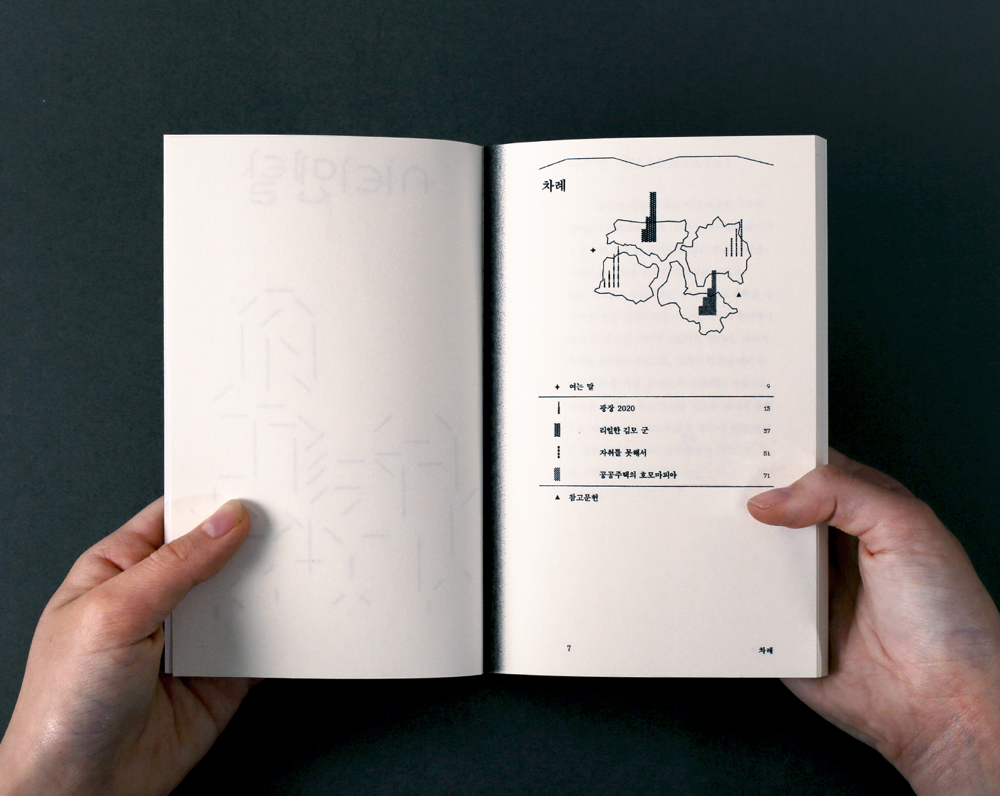
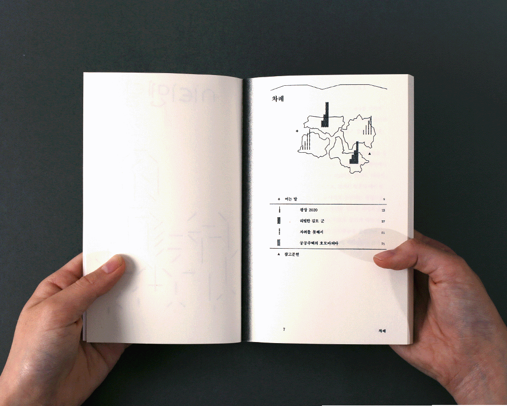
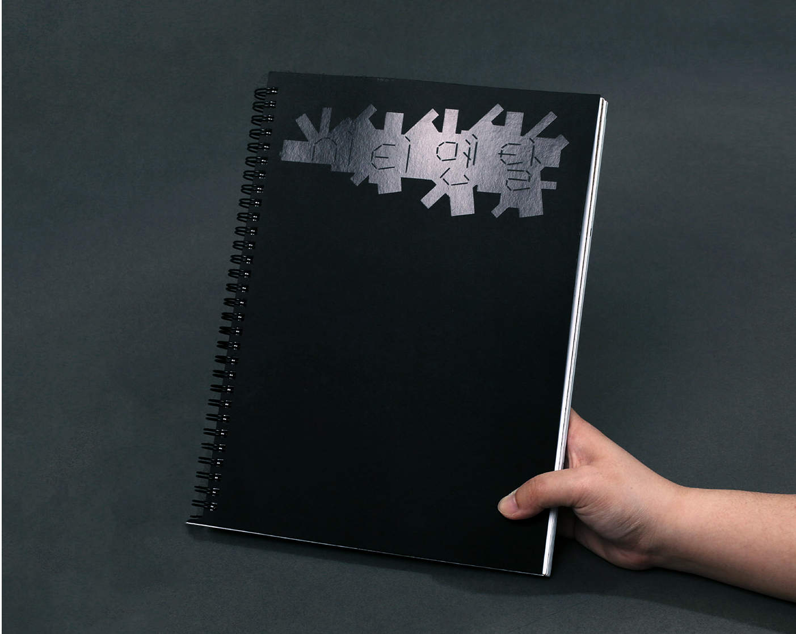
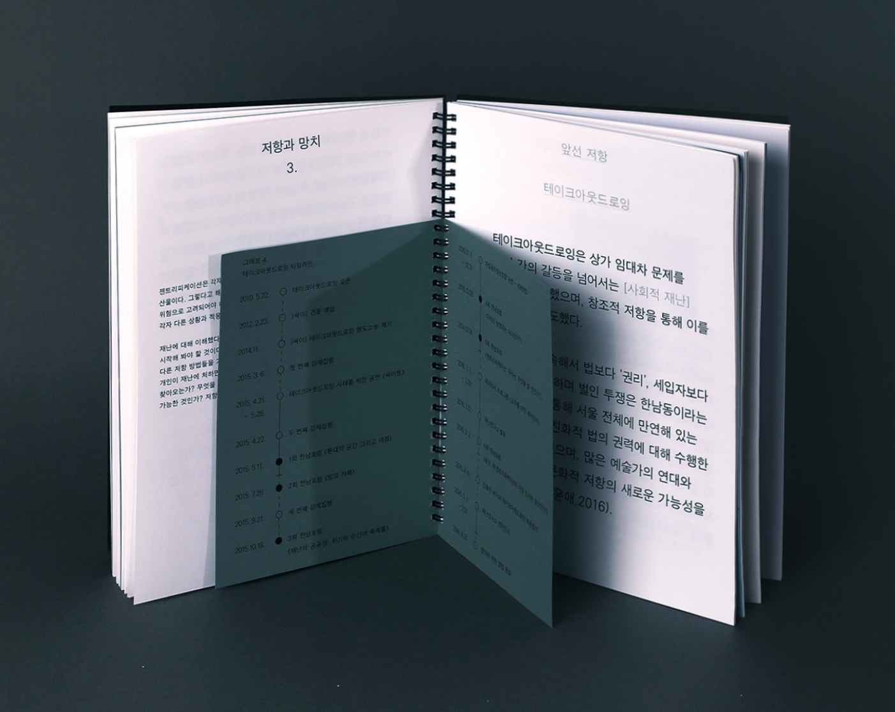
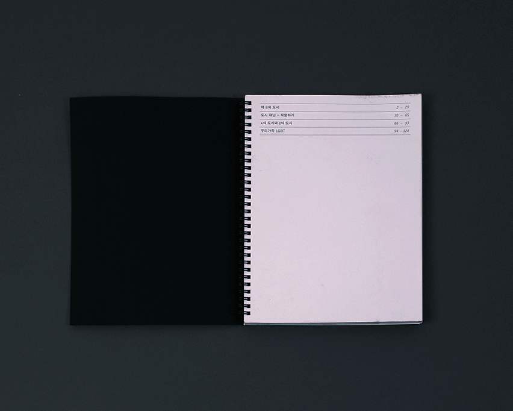

Dabin Kim 多彬 - Typography ↔ Print + Digital ---
Dabin Kim 多彬 - Typography ↔ Print + Digital --- Dabin Kim 多彬 - Typography ↔ Print + Digital ---
Dabin Kim 多彬 - Typography ↔ Print + Digital ---
Dabin KimPrintWebInfo ••••••••••••••••••••••••••••••••••••••••••••••••••••••••••••••••••••••• Dabin Kim is Typography Apprentice.
Tries to explore the boundary of visual language, work in and out between digital and tangible surface. Studying Visual Communication Design at Hongik University, Korea.
Ci·ti·men·tal, series of two books, 2020.
— Team <在在所所> (Dabin Kim, Chawon Jeon, Sunyong Mun, Jihyun Seo) The ‘Ci·ti·men·tal’ was conducted by team <在在所所> with the support of the Hongik University Innovation Project.


 Volume 1 inside.
Table of contents: A. “Square 2020,” B. “Mr. real Kim,” C. “Because I Can’t move out,” D.“Homomafia in Public Housing.”


 Volume 2 inside.
Table of contents: A. "The formation process of special educational zones," B. "Gentrification and the practice of art,"
C. "The change of family due to the formation of new towns and residential independence," D. "The study of sexual dissidents and housing welfare."
‘시티멘탈’은 공간에 관한 이야기임과 동시에, 사람들에 관한 이야기다.
우리의 모든 삶의 형태를 같이하는 ‘집’이라는 공간을 통해 여러 가지 관점의 사회적 현실을 마주하고자 한다.
프로젝트 참가자들은 ‘도시정서’의 관점에서 ‘아파트 키드’ 이후의 새로운 세대가 출현하였음을 인식하고,이에 대한 공감을 바탕으로 책을 만드는 과정을 통해 새로운 세대에 맞는 공간 담론을 형성하고자 했다.
‘시티멘탈’은 공간에 관한 네 화자의 개인적인 이야기를 담고 있는 1권과 이야기를 행정학, 가정학, 사회학적 관점으로 확장한 2권으로 이루어져 있다.
팀장으로 프로젝트의 전체 기획과 메인 타입페이스, 2권 전체 디자인과 조판을 담당했다.
‘Ci·ti·men·tal’ is about space, and at the same time, it’s about people. Through a space called “home,” which
shares all our life forms, we want to face social realities from various perspectives.
Project participants recognized the emergence of a new generation after the 'Apartment Kid' from the perspective of this 'urban
sentiment' and sought to form a space discourse for the new generation through the process of creating the book based on empathy.
‘Ci·ti·men·tal’ consists of volume one that contains four speakers' personal stories about space and volume
two that extend the story from an administrative, family and sociological perspective. ‘Ci·ti·men·tal’ is basically
"urban sentiment," which refers to the urban space in which speakers in their 20s live in a powerful way with
individual sentiment.